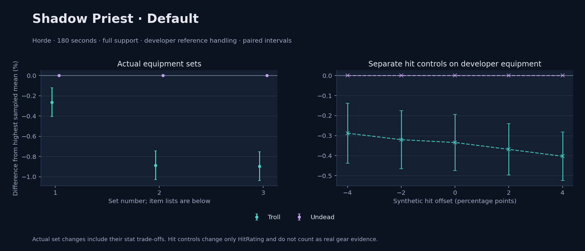

Horde · Troll / Undead

No pet or guardian appears in the reference combat metrics. Reference: Troll, developer equipment, 180 seconds and full support. Pet choices remain those of the developer build.
WoWSims developer · Shadow Testing
Unmeasured proc rates: [{"source": "enchant", "id": 8217, "name": "Enchant Weapon - Revelation", "kind": "chance", "origin": "unknown"}]
180 seconds, full support and original developer references. Hit below is generic sheet melee / spell hit; school and talent bonuses can be attached directly to spells.
| Race | DPS | Gap and interval | Generic hit | Replay |
|---|---|---|---|---|
| Undead | 792.70 | +0.000% ± 0.000 | 2.0% / 2.0% | Native input · Website JSON |
| Troll | 790.61 | -0.263% ± 0.141 | 2.0% / 2.0% | Native input · Website JSON |
| Slot | Item | ID | Enchant |
|---|---|---|---|
| Head | Eternal Crown | 14332 | |
| Neck | Chains of the Lich | 23125 | |
| Shoulder | Felcloth Shoulders | 14112 | |
| Back | Arcanoweave Cloak | 272411 | |
| Chest | Robe of Winter Night | 14136 | Mystic Rugged Armor Kit |
| Wrist | Master's Bracers | 10248 | Enchant Bracer - Superior Intellect |
| Hands | Felcloth Gloves | 18407 | Mystic Rugged Armor Kit |
| Waist | Master's Belt | 10255 | |
| Legs | Master's Leggings | 10252 | Mystic Rugged Armor Kit |
| Feet | Master's Boots | 10247 | Mystic Rugged Armor Kit |
| Ring 1 | Blessed Band of Light | 272407 | |
| Ring 2 | Brilliant Watcher's Signet | 275973 | |
| Trinket 1 | Weakness Analyzer | 272438 | |
| Trinket 2 | Jewel of the Guard Captain | 270225 | |
| Main hand | Verimonde's Last Resort | 22688 | Enchant Weapon - Revelation |
| Off hand | Master's Rod | 15942 | |
| Ranged / relic | Lunar Wand | 15283 |
Published ranked alternatives · Published pre-raid
Recorded source replacements: [{"slot": "feet", "from": 11822, "to": 275606, "publishedAlternativeRank": 1, "publishedEpDelta": -1.6, "reason": "First published alternative compatible with the current WoWSims database, class, faction and occupied slots."}]
Unmeasured proc rates: [{"source": "item", "id": 2243, "name": "Hand of Edward the Odd", "kind": "ppm", "origin": "vanilla"}]
180 seconds, full support and original developer references. Hit below is generic sheet melee / spell hit; school and talent bonuses can be attached directly to spells.
| Race | DPS | Gap and interval | Generic hit | Replay |
|---|---|---|---|---|
| Undead | 783.12 | +0.000% ± 0.000 | 2.7% / 2.7% | Native input · Website JSON |
| Troll | 776.18 | -0.886% ± 0.142 | 2.7% / 2.7% | Native input · Website JSON |
| Slot | Item | ID | Enchant |
|---|---|---|---|
| Head | Felcloth Hood | 14111 | Arcanum of Focus |
| Neck | Archlight Talisman | 15856 | Enchant Necklace - Spell Power |
| Shoulder | Mantle of the Timbermaw | 19050 | |
| Back | Arcanoweave Cloak | 272411 | |
| Chest | Robe of Winter Night | 14136 | Mystic Rugged Armor Kit |
| Wrist | Runecloth Cuffs | 254123 | Enchant Bracer - Greater Spellpower |
| Hands | Gloves of Spell Mastery | 14146 | Enchant Gloves - Minor Haste |
| Waist | Belt of the Archmage | 18405 | |
| Legs | Felcloth Pants | 14107 | Arcanum of Focus |
| Feet | Venomspew Footpads | 275606 | Mystic Rugged Armor Kit |
| Ring 1 | Blessed Band of Light | 272407 | |
| Ring 2 | Maiden's Circle | 13001 | |
| Trinket 1 | Weakness Analyzer | 272438 | |
| Trinket 2 | Rune of the Guard Captain | 19120 | |
| Main hand | Hand of Edward the Odd | 2243 | |
| Off hand | Spirit of Aquementas | 11904 | Enchant Off-Hand - Superior Intellect |
| Ranged / relic | Greater Eternal Wand | 249237 |
Published ranked alternatives · Published pre-raid
Recorded source replacements: [{"slot": "shoulder", "from": 227808, "to": 19050, "publishedAlternativeRank": 1, "publishedEpDelta": -10.5, "reason": "First published alternative compatible with the current WoWSims database, class, faction and occupied slots."}, {"slot": "waist", "from": 228190, "to": 18405, "publishedAlternativeRank": 1, "publishedEpDelta": -5.1, "reason": "First published alternative compatible with the current WoWSims database, class, faction and occupied slots."}, {"slot": "feet", "from": 11822, "to": 254113, "publishedAlternativeRank": 1, "publishedEpDelta": -0.2, "reason": "First published alternative compatible with the current WoWSims database, class, faction and occupied slots."}]
Unmeasured proc rates: [{"source": "item", "id": 2243, "name": "Hand of Edward the Odd", "kind": "ppm", "origin": "vanilla"}]
180 seconds, full support and original developer references. Hit below is generic sheet melee / spell hit; school and talent bonuses can be attached directly to spells.
| Race | DPS | Gap and interval | Generic hit | Replay |
|---|---|---|---|---|
| Undead | 787.42 | +0.000% ± 0.000 | 2.9% / 2.9% | Native input · Website JSON |
| Troll | 780.37 | -0.895% ± 0.141 | 2.9% / 2.9% | Native input · Website JSON |
| Slot | Item | ID | Enchant |
|---|---|---|---|
| Head | Felcloth Hood | 14111 | Arcanum of Focus |
| Neck | Archlight Talisman | 15856 | Enchant Necklace - Spell Power |
| Shoulder | Mantle of the Timbermaw | 19050 | |
| Back | Arcanoweave Cloak | 272411 | |
| Chest | Robe of Winter Night | 14136 | Mystic Rugged Armor Kit |
| Wrist | Netherpearl Cuffs | 254067 | Enchant Bracer - Greater Spellpower |
| Hands | Gloves of Spell Mastery | 14146 | Enchant Gloves - Minor Haste |
| Waist | Belt of the Archmage | 18405 | |
| Legs | Felcloth Pants | 14107 | Arcanum of Focus |
| Feet | Black Sandals | 254113 | Mystic Rugged Armor Kit |
| Ring 1 | Blessed Band of Light | 272407 | |
| Ring 2 | Maiden's Circle | 13001 | |
| Trinket 1 | Weakness Analyzer | 272438 | |
| Trinket 2 | Frozen Heart of the Mountain | 249469 | |
| Main hand | Hand of Edward the Odd | 2243 | |
| Off hand | Spirit of Aquementas | 11904 | Enchant Off-Hand - Superior Intellect |
| Ranged / relic | Brilliant Wand | 249385 |
The same declared pool is available to every race. Each race keeps its best validation-sample set with its screening-selected racial policy. Separate samples confirm that choice, with fresh precision samples near the practical-loss boundary. Gaps use the highest sampled mean under that same duration, support and reference treatment as their reference. A zero reference gap does not certify a race; the main matrix also allows uncertainty in the leader.
| Pool | Seconds | Support | References | Race | DPS | Gap and interval | Racial policies / mana | Selected set | Generic hit: melee / spell | Replay |
|---|---|---|---|---|---|---|---|---|---|---|
| published-pre-raid | 60 | full | developer | Undead | 778.75 | +0.000% ± 0.0005,000 iterations | developer / developer / developerMana waits 0.0s | published-priest-shadow-horde-eda275e4c117fd42 | 2.9% / 2.9% | Input · Result · Stats |
| published-pre-raid | 60 | full | developer | Troll | 770.55 | -1.053% ± 0.1045,000 iterations | developer / developer / developerMana waits 0.0s | published-priest-shadow-horde-eda275e4c117fd42 | 2.9% / 2.9% | Input · Result · Stats |
| published-pre-raid | 60 | full | explicit | Undead | 778.75 | +0.000% ± 0.0005,000 iterations | developer / developer / developerMana waits 0.0s | published-priest-shadow-horde-eda275e4c117fd42 | 2.9% / 2.9% | Input · Result · Stats |
| published-pre-raid | 60 | full | explicit | Troll | 770.55 | -1.053% ± 0.1045,000 iterations | developer / developer / developerMana waits 0.0s | published-priest-shadow-horde-eda275e4c117fd42 | 2.9% / 2.9% | Input · Result · Stats |
| published-pre-raid | 60 | self | developer | Undead | 680.59 | +0.000% ± 0.0005,000 iterations | developer / developer / developerMana waits 0.0s | published-priest-shadow-horde-eda275e4c117fd42 | 2.9% / 2.9% | Input · Result · Stats |
| published-pre-raid | 60 | self | developer | Troll | 674.90 | -0.837% ± 0.1035,000 iterations | developer / developer / developerMana waits 0.0s | published-priest-shadow-horde-eda275e4c117fd42 | 2.9% / 2.9% | Input · Result · Stats |
| published-pre-raid | 60 | self | explicit | Undead | 680.59 | +0.000% ± 0.0005,000 iterations | developer / developer / developerMana waits 0.0s | published-priest-shadow-horde-eda275e4c117fd42 | 2.9% / 2.9% | Input · Result · Stats |
| published-pre-raid | 60 | self | explicit | Troll | 674.90 | -0.837% ± 0.1035,000 iterations | developer / developer / developerMana waits 0.0s | published-priest-shadow-horde-eda275e4c117fd42 | 2.9% / 2.9% | Input · Result · Stats |
| published-pre-raid | 180 | full | developer | Undead | 786.87 | +0.000% ± 0.0005,000 iterations | developer / developer / developerMana waits 0.0s | published-priest-shadow-horde-eda275e4c117fd42 | 2.9% / 2.9% | Input · Result · Stats · Website JSON |
| published-pre-raid | 180 | full | developer | Troll | 779.69 | -0.912% ± 0.0625,000 iterations | developer / developer / developerMana waits 0.0s | published-priest-shadow-horde-eda275e4c117fd42 | 2.9% / 2.9% | Input · Result · Stats · Website JSON |
| published-pre-raid | 180 | full | explicit | Undead | 786.87 | +0.000% ± 0.0005,000 iterations | developer / developer / developerMana waits 0.0s | published-priest-shadow-horde-eda275e4c117fd42 | 2.9% / 2.9% | Input · Result · Stats |
| published-pre-raid | 180 | full | explicit | Troll | 779.69 | -0.912% ± 0.0625,000 iterations | developer / developer / developerMana waits 0.0s | published-priest-shadow-horde-eda275e4c117fd42 | 2.9% / 2.9% | Input · Result · Stats |
| published-pre-raid | 180 | self | developer | Undead | 679.73 | +0.000% ± 0.0005,000 iterations | developer / developer / developerMana waits 0.0s | published-priest-shadow-horde-eda275e4c117fd42 | 2.9% / 2.9% | Input · Result · Stats |
| published-pre-raid | 180 | self | developer | Troll | 679.09 | -0.093% ± 0.0625,000 iterations | developer / developer / developerMana waits 0.3s | published-priest-shadow-horde-eda275e4c117fd42 | 2.9% / 2.9% | Input · Result · Stats |
| published-pre-raid | 180 | self | explicit | Undead | 679.73 | +0.000% ± 0.0005,000 iterations | developer / developer / developerMana waits 0.0s | published-priest-shadow-horde-eda275e4c117fd42 | 2.9% / 2.9% | Input · Result · Stats |
| published-pre-raid | 180 | self | explicit | Troll | 679.09 | -0.093% ± 0.0625,000 iterations | developer / developer / developerMana waits 0.3s | published-priest-shadow-horde-eda275e4c117fd42 | 2.9% / 2.9% | Input · Result · Stats |
| published-pre-raid | 300 | full | developer | Undead | 790.78 | +0.000% ± 0.0005,000 iterations | developer / developer / developerMana waits 0.0s | published-priest-shadow-horde-eda275e4c117fd42 | 2.9% / 2.9% | Input · Result · Stats |
| published-pre-raid | 300 | full | developer | Troll | 785.80 | -0.630% ± 0.0495,000 iterations | developer / developer / developerMana waits 0.0s | published-priest-shadow-horde-eda275e4c117fd42 | 2.9% / 2.9% | Input · Result · Stats |
| published-pre-raid | 300 | full | explicit | Undead | 790.78 | +0.000% ± 0.0005,000 iterations | developer / developer / developerMana waits 0.0s | published-priest-shadow-horde-eda275e4c117fd42 | 2.9% / 2.9% | Input · Result · Stats |
| published-pre-raid | 300 | full | explicit | Troll | 785.80 | -0.630% ± 0.0495,000 iterations | developer / developer / developerMana waits 0.0s | published-priest-shadow-horde-eda275e4c117fd42 | 2.9% / 2.9% | Input · Result · Stats |
| published-pre-raid | 300 | self | developer | Undead | 677.31 | +0.000% ± 0.0005,000 iterations | developer / developer / developerMana waits 9.5s | published-priest-shadow-horde-eda275e4c117fd42 | 2.9% / 2.9% | Input · Result · Stats |
| published-pre-raid | 300 | self | developer | Troll | 620.71 | -8.356% ± 0.0655,000 iterations | developer / developer / developerMana waits 52.6s | published-priest-shadow-horde-eda275e4c117fd42 | 2.9% / 2.9% | Input · Result · Stats |
| published-pre-raid | 300 | self | explicit | Undead | 677.31 | +0.000% ± 0.0005,000 iterations | developer / developer / developerMana waits 9.5s | published-priest-shadow-horde-eda275e4c117fd42 | 2.9% / 2.9% | Input · Result · Stats |
| published-pre-raid | 300 | self | explicit | Troll | 620.71 | -8.356% ± 0.0655,000 iterations | developer / developer / developerMana waits 52.6s | published-priest-shadow-horde-eda275e4c117fd42 | 2.9% / 2.9% | Input · Result · Stats |
| developer-reference | 60 | full | developer | Undead | 797.79 | +0.000% ± 0.0005,000 iterations | developer / developer / developerMana waits 0.0s | developer | 2.0% / 2.0% | Input · Result · Stats |
| developer-reference | 60 | full | developer | Troll | 791.08 | -0.842% ± 0.1045,000 iterations | developer / developer / developerMana waits 0.0s | developer | 2.0% / 2.0% | Input · Result · Stats |
| developer-reference | 60 | full | explicit | Undead | 797.79 | +0.000% ± 0.0005,000 iterations | developer / developer / developerMana waits 0.0s | developer | 2.0% / 2.0% | Input · Result · Stats |
| developer-reference | 60 | full | explicit | Troll | 791.08 | -0.842% ± 0.1045,000 iterations | developer / developer / developerMana waits 0.0s | developer | 2.0% / 2.0% | Input · Result · Stats |
| developer-reference | 60 | self | developer | Undead | 697.70 | +0.000% ± 0.0005,000 iterations | developer / developer / developerMana waits 0.0s | developer | 2.0% / 2.0% | Input · Result · Stats |
| developer-reference | 60 | self | developer | Troll | 694.66 | -0.436% ± 0.1015,000 iterations | developer / developer / developerMana waits 0.0s | developer | 2.0% / 2.0% | Input · Result · Stats |
| developer-reference | 60 | self | explicit | Undead | 697.70 | +0.000% ± 0.0005,000 iterations | developer / developer / developerMana waits 0.0s | developer | 2.0% / 2.0% | Input · Result · Stats |
| developer-reference | 60 | self | explicit | Troll | 694.66 | -0.436% ± 0.1015,000 iterations | developer / developer / developerMana waits 0.0s | developer | 2.0% / 2.0% | Input · Result · Stats |
| developer-reference | 180 | full | developer | Undead | 792.72 | +0.000% ± 0.0005,000 iterations | developer / developer / developerMana waits 0.0s | developer | 2.0% / 2.0% | Input · Result · Stats · Website JSON |
| developer-reference | 180 | full | developer | Troll | 790.47 | -0.284% ± 0.0605,000 iterations | developer / developer / developerMana waits 0.0s | developer | 2.0% / 2.0% | Input · Result · Stats · Website JSON |
| developer-reference | 180 | full | explicit | Undead | 792.72 | +0.000% ± 0.0005,000 iterations | developer / developer / developerMana waits 0.0s | developer | 2.0% / 2.0% | Input · Result · Stats |
| developer-reference | 180 | full | explicit | Troll | 790.47 | -0.284% ± 0.0605,000 iterations | developer / developer / developerMana waits 0.0s | developer | 2.0% / 2.0% | Input · Result · Stats |
| developer-reference | 180 | self | developer | Undead | 687.14 | +0.000% ± 0.0005,000 iterations | developer / developer / developerMana waits 0.1s | developer | 2.0% / 2.0% | Input · Result · Stats |
| developer-reference | 180 | self | developer | Troll | 637.91 | -7.164% ± 0.0815,000 iterations | developer / developer / developerMana waits 27.7s | developer | 2.0% / 2.0% | Input · Result · Stats |
| developer-reference | 180 | self | explicit | Undead | 687.14 | +0.000% ± 0.0005,000 iterations | developer / developer / developerMana waits 0.1s | developer | 2.0% / 2.0% | Input · Result · Stats |
| developer-reference | 180 | self | explicit | Troll | 637.91 | -7.164% ± 0.0815,000 iterations | developer / developer / developerMana waits 27.7s | developer | 2.0% / 2.0% | Input · Result · Stats |
| developer-reference | 300 | full | developer | Undead | 797.61 | +0.000% ± 0.0005,000 iterations | developer / developer / developerMana waits 0.0s | developer | 2.0% / 2.0% | Input · Result · Stats |
| developer-reference | 300 | full | developer | Troll | 792.95 | -0.585% ± 0.0475,000 iterations | oncd / developer / developerMana waits 0.0s | developer | 2.0% / 2.0% | Input · Result · Stats |
| developer-reference | 300 | full | explicit | Undead | 797.61 | +0.000% ± 0.0005,000 iterations | developer / developer / developerMana waits 0.0s | developer | 2.0% / 2.0% | Input · Result · Stats |
| developer-reference | 300 | full | explicit | Troll | 792.95 | -0.585% ± 0.0475,000 iterations | oncd / developer / developerMana waits 0.0s | developer | 2.0% / 2.0% | Input · Result · Stats |
| developer-reference | 300 | self | developer | Undead | 632.28 | +0.000% ± 0.0005,000 iterations | developer / developer / developerMana waits 48.9s | developer | 2.0% / 2.0% | Input · Result · Stats |
| developer-reference | 300 | self | developer | Troll | 574.03 | -9.212% ± 0.0805,000 iterations | developer / developer / developerMana waits 92.8s | developer | 2.0% / 2.0% | Input · Result · Stats |
| developer-reference | 300 | self | explicit | Undead | 632.28 | +0.000% ± 0.0005,000 iterations | developer / developer / developerMana waits 48.9s | developer | 2.0% / 2.0% | Input · Result · Stats |
| developer-reference | 300 | self | explicit | Troll | 574.03 | -9.212% ± 0.0805,000 iterations | developer / developer / developerMana waits 92.8s | developer | 2.0% / 2.0% | Input · Result · Stats |
180 seconds, full support and the developer equipment anchor. These checks test creature sensitivity without a full gear search.
| Target | References | Race | DPS | Gap and interval | Replay |
|---|---|---|---|---|---|
| beast | developer | Troll | 829.55 | +0.000% ± 0.000 | Input · Result |
| beast | developer | Undead | 792.70 | -4.442% ± 0.135 | Input · Result |
| beast | explicit | Troll | 829.55 | +0.000% ± 0.000 | Input · Result |
| beast | explicit | Undead | 792.70 | -4.442% ± 0.135 | Input · Result |
| elemental | developer | Undead | 792.70 | +0.000% ± 0.000 | Input · Result |
| elemental | developer | Troll | 790.05 | -0.334% ± 0.141 | Input · Result |
| elemental | explicit | Undead | 792.70 | +0.000% ± 0.000 | Input · Result |
| elemental | explicit | Troll | 790.05 | -0.334% ± 0.141 | Input · Result |
Some equipment uses unmeasured proc rates; Revelation uses a provisional proc model; Narrow actual equipment hit range
Some items may display and use stats a litle higher than their original value.; Procs from Weapons, Trinkets and other Items are not yet supported
These known-issue notes are source context. Runtime checks establish current cast coverage, including Mutilate. They do not prove every mechanic matches the game.